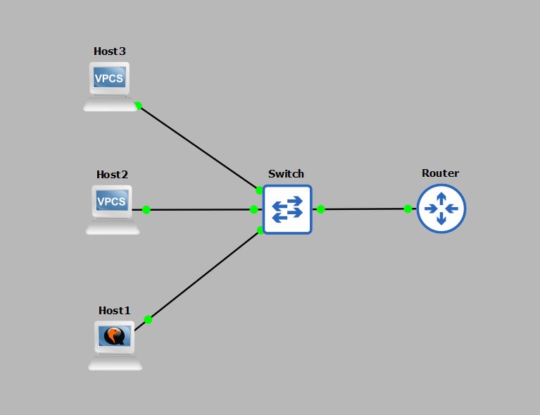
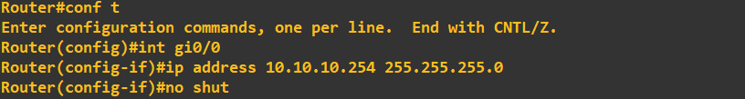
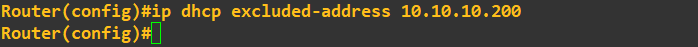
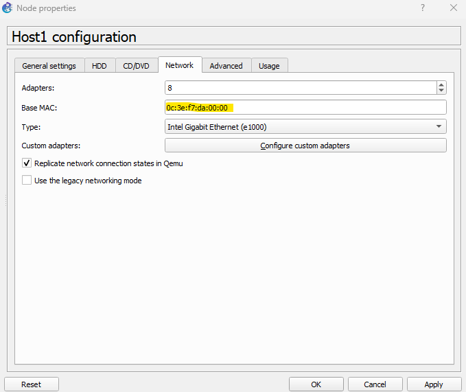
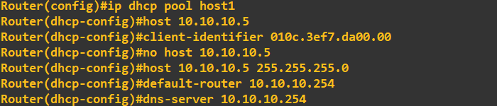
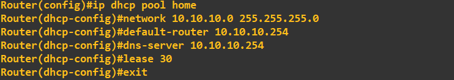
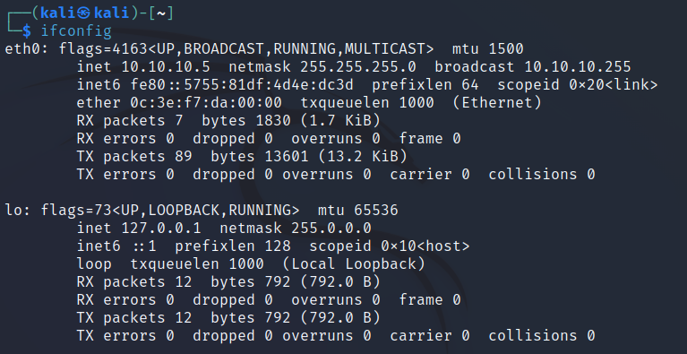
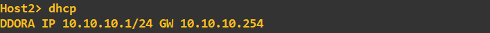
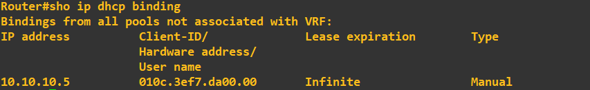

CISCO Configuring DHCP
CISCO routers offer a service called Dynamic Host Configuration Protocol (DHCP). DHCP provides IP addresses to our hosts, along with configuration items such as default gateways, DNS servers, static routes, host names, and more (with over 200 options available). DHCP uses the following process, often referred to as DORA:
- Discover: A client asks for an IP address.
- Offer: A DHCP server offers an IP address.
- Request: The client requests the IP address offered by the DHCP server.
- Acknowledgement: The DHCP server confirms the request and removes the allocated IP address from its pool.
Lab Setup
- GNS3 as the network emulation software.
- My PC (host1).
- A CISCO router on IOSv 15.9 (Router - Dynamips Pack for $56).
- Two additional PCs (host2 and host3).
- A CISCO layer 2 switch (Switch).

IP Schema
The IP schema for this lab will be 10.10.10.0/24. This provides us with 254 usable addresses (256 minus the broadcast address and network address). The subnet mask will be 255.255.255.0.
IP Configuration
In this lab, we aim to achieve the following IP configuration, primarily using DHCP:
- The router will act as the DHCP server and will be on 10.10.10.254/24 (interface Gi0/0).
- Host1 will serve as an internal webserver and must always receive the IP address 10.10.10.5 from the DHCP server.
- Host2 will receive a DHCP-allocated IP address from the DHCP pool.
- Host3 will have the IP address 10.10.10.200 statically assigned, so the DHCP server must not offer this IP to any host.
- Finally, the DHCP pool will use the 10.10.10.0/24 subnet. Hosts should receive a default gateway and DNS server of 10.10.10.254, with a lease time of 30 days for dynamically assigned IPs.
DHCP Excluding an IP
We first need to assign the router's connected interface an IP address of 10.10.10.254 255.255.255.0. As we're statically assigning 10.10.10.200, we must exclude this from the DHCP allocations:


DHCP Statically Assigning an IP to a Host
Host1 must receive IP 10.10.10.5 when it's connected. To achieve this, we need either its MAC address (for Linux) or client identifier (for Windows). We can inspect host1's properties in GNS3 to get this information:

Even though host1 is a Kali Linux machine, it's emulated by my Windows 11 host OS. So, we'll treat it as a Windows host for this emulation in GNS3. To convert this MAC address to a client identifier, we add "01" to the MAC address. We then input this into the router:
010c.3ef7.da00.00
We now need to create a DHCP pool for this static assignment as follows:

You will notice I made a mistake in that assignment by not including the subnet mask with the IP address. Simply use the 'no' command to remove a setting. All going well host1 should now receive the IP address 10.10.10.5 when connected.DHCP dynamically assign an IP to a host
Finally, we need to assign the remaining host (and any others that may be connected in the future) a dynamically allocated IP address from the remaining pool, with a lease time of 30 days. To create a dynamic pool we run the following:
At this point our DHCP server should be fully configured to meet our specification. We can switch host1 and host2 to DHCP IP address assignment and statically assign host3. Host1 is switched DHCP and picks up the correct 10.10.10.5 address:
Host2 is set to DHCP and should pick up a dynamic assignment from the pool (should be 10.10.10.1 as this is the first available address). This host is switched DHCP:
You will notice the simple PC emulator at host2 shows the DORA process when you switch it to DHCP assigment, this reinforces the process mentioned earlier. We can view the DHCP bindings on the router by using the following command:
If you are wondering where host2's lease is, it won't appear as the PC emulator at host2 is just replicating a TELNET client with no hardware address, therefore does not show up. If this was a fully fledged machine it would be showing up in the bindings table. This concludes the demonstration, we've covered the key types of DHCP assignment you'll probably see/use but bear in mind the DHCP application itself has a lot more functionality.